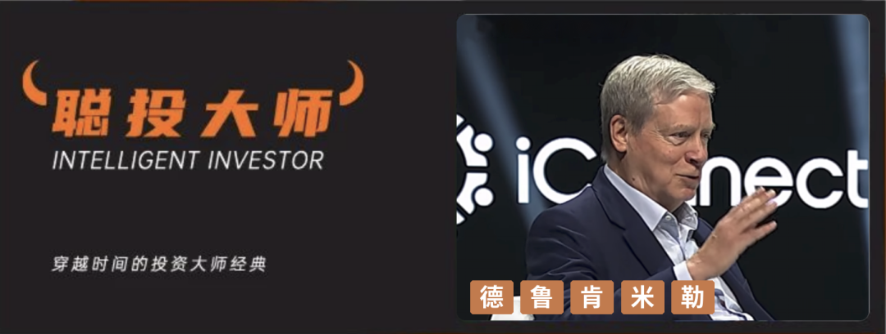
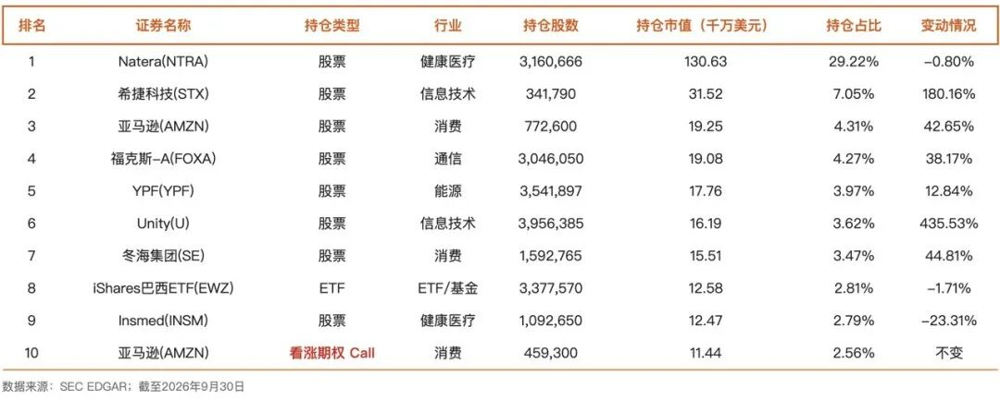
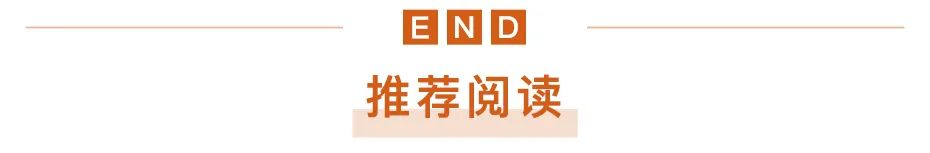
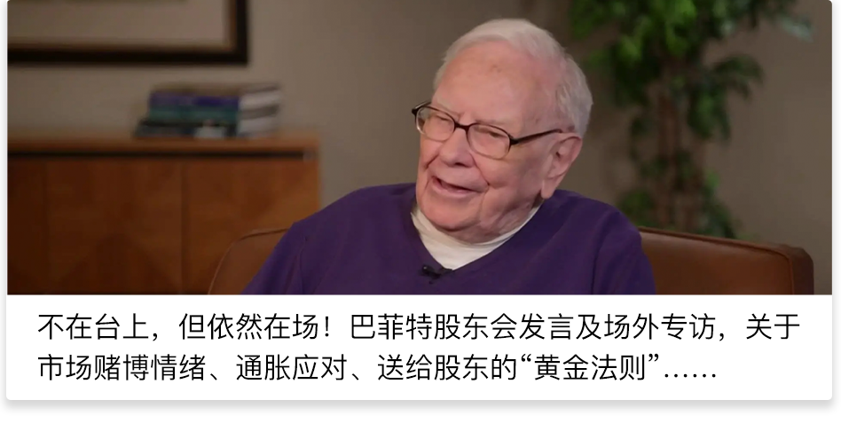
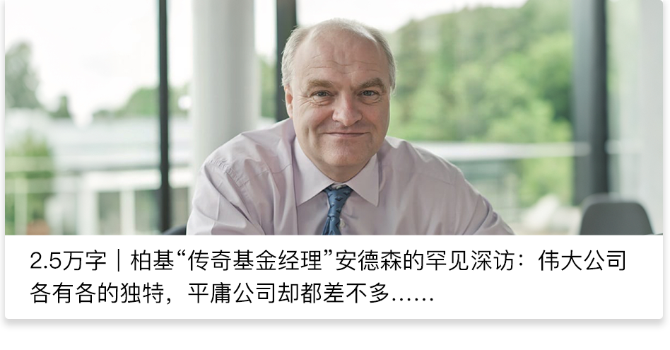

2022年底，ChatGPT刚刚问世不久。
摩根士丹利组织了一场宏观投资人的线上交流。一群被称为“宏观投资传奇人物”的投资大师，正在讨论利率和其他宏观经济问题。
突然，一个德鲁肯米勒此前从未见过的年轻投资人闯入讨论。
“美国商业史上最重大的事情正在发生，你们却还在这里讨论那些鸡毛蒜皮的小事！”
这个人，就是Atreides Management创始人加文·贝克（Gavin Baker）。（点击阅读：“只要你在亏钱，你就是错了！”加文·贝克2.2万字长谈，一场关于AI、市场以及投资这门手艺的大师课）
四年后的11月17日，在TomorrowX峰会上，72岁的传奇宏观投资人斯坦利·德鲁肯米勒（Stanley Druckenmiller），特意用这段往事作为开场，公开感谢贝克当年的提醒。
德鲁肯米勒后来曾多次加仓英伟达，也抓住了这一轮AI浪潮带来的巨大投资机会。
有意思的是，就在今年1月30日，他还曾与摩根士丹利全球衍生品业务负责人伊利亚娜·布扎利（Iliana Bouzali）进行过一场深入交流。
那场对话于3月公开，我们当时以《接下来三到四年，我其实挺兴奋！》（点击阅读）为题进行了实录分享。
彼时，德鲁肯米勒看好美国经济，持有股票和铜的多头，并认为宏观投资可能迎来多年未见的机会。他强调，自己最大的优势不是智商，而是敢于扣动扳机。
然而，仅仅九个多月过去，他的态度发生了显著变化。
“我真的想不起来，在过去50年里，还有哪个时期像现在这样，对未来12个月市场会走向哪里如此没有把握。”
在这场最新对话中，德鲁肯米勒坦言，自己几乎已经不再持有年初的那些投资。股票整体保持中性，转而做空铜，原因是他所关注的多项市场信号正在发生变化。
“我们现在的目标不是赚钱，而是尽量不亏钱。”
对于一位以敢于集中下注著称、长期保持没有年度亏损纪录的投资大师来说，这个选择尤其值得玩味。
而且，他并没有因此否定AI的长期前景。相反的是，他认为AI基础设施之后，真正值得关注的机会可能转向应用层，甚至AI实验室未来可能不再只是出售token，而是直接出售完成任务的能力。
我们也附上杜肯家族办公室最新披露的2026年三季度13F持仓。其截至9月底的美股持仓市值约41.49亿美元，医疗、生物科技与科技公司仍占据重要位置。
不过，13F只是季度末部分证券持仓的快照，无法反映他11月的最新仓位。
按对话中德鲁肯米勒的说法，股票方面，整体净敞口基本接近零，不过内部持仓比较复杂，既有多头，也有空头。
杜肯家族办公室三季末美股持仓前十大

相比具体买卖了什么，这场对话更值得关注的是，德鲁肯米勒如何理解自己的投资优势。
他不依赖复杂的风险模型，而是高度重视实际盈亏是否符合预期；他敢于在只掌握部分信息时先建立仓位，却又强调必须随时准备推翻自己的判断。
“把所有鸡蛋放在一个篮子里，然后非常仔细地盯着这个篮子。”
他认为，很多聪明投资者的问题，恰恰在于太过迷恋自己的投资逻辑，忘记了后半句话。
从年初的积极下注，到如今主动选择保全资本，这看起来是两种截然不同的投资姿态，背后却是同一种纪律。
看得清楚时敢于下注，看不清楚时承认自己不知道。
对于已经在市场中经历过许多轮周期的投资者而言，这或许是德鲁肯米勒这场最新对话最值得反复琢磨的地方。
很精彩！聪明投资者（ID: Capital-nature）整理分享给大家。
延伸阅读：美债收益率又站在十字路口！重温"对冲大神"德鲁肯米勒经典对话，剧变来临时，他怎么判断、怎么扣扳机、怎么认错……
从极度乐观到极度保守：为什么德鲁肯米勒不再出手？
布扎利 我重新看了一遍我们今年1月的那场对话。当时是在一个规模较小的场合，你非常看好美国经济，持有股票多头，同时做空美国国债作为对冲。你还看多铜，并且认为医疗健康行业将成为一个突破性的赢家。
那么，这些投资你现在还持有多少？
德鲁肯米勒 基本上都没有了。
回过头看，今年1月那场采访，确实发生在一个非常特殊的时期。
在我的投资生涯中，有些时候，我对市场的方向非常有把握；有些时候，我却完全看不清楚。当我看得很清楚时，我喜欢下重注；而当我没有把握时，有时候我甚至会完全不参与市场。
今年1月时，美国经济非常强劲。更重要的是，从前瞻性的角度看，当时联邦基金利率在3.5%左右，名义经济增长率却达到6%。这意味着货币政策宽松得简直不可思议。
如果你看看美联储的利率点阵图，就会发现，市场当时还预期年内会进一步降息。
与此同时，包括铜在内的大宗商品价格正在向上突破，创出新高。我所关注的股市涨跌家数线（Advance/Decline Line），以及其他市场技术指标，也都在不断创新高。
信用利差则处于非常低的水平。
在这样的环境下，我几乎无法想象，美国经济会在未来6到12个月陷入衰退。货币政策实在太宽松了。
除此之外，还有一件重要的事情正在发生。
前一年秋天较晚的时候，Claude Code开始让很多人感到兴奋，至少科技行业的内部人士已经意识到，AI的发展可能正在加速。
因此，我们非常看好资本开支的增长。所有这些因素加在一起，让我们对股票市场和美国经济都相当乐观。
遗憾的是，大约一个月后，一场战争爆发了。我当时有些恐慌，卖掉了不少资产。
不过，后来我们其实相当幸运，因为很快就重新买了回来。
而重新买入的时候，有一件事变得比以前任何时候都更加清晰：AI基础设施投资即将迎来一轮全面爆发。
那次调整反而帮我们清理掉了投资组合中那些不太可能大幅上涨的资产。
现在，我们再看看今天的情况。
美国经济依然强劲，但我刚才谈到的其他所有条件，几乎都已经完全反转。
美联储不再降息，而是在加息。美联储的政策领导层也发生了变化。
现在负责美联储的那位先生，我非常了解。他曾经在我旁边坐了15年。他对过去15年美国几乎可以免费获得资金、而财政赤字和其他问题却不断恶化的状况，非常不满。
更让他不满的是，通胀已经连续五年高于目标水平。所以，我们现在面对的是一个货币政策趋紧的环境。
再看看大宗商品。今年1月时，它们还在不断突破新高，现在却似乎已经见顶回落。事实上，我们现在已经开始做空铜。
当时还在不断创新高的股市涨跌家数线，实际上早在8月14日就已经见顶。尽管主要股指直到10月仍在创出新高，市场内部的广度指标却早已开始走弱。
信用利差也在扩大。
你应该明白我的意思了。今天的所有情况，几乎都与1月份完全相反。
所以，我们现在既没有大举做多股票，也没有大举做空股票。
我承认，我其实很喜欢做空。但考虑到今天这场大会上大家所关注的技术创新，我实在不敢贸然做空。
很多相关股票已经经历了严重的超卖，市场仓位也经过了一轮清洗。从短期交易的角度来看，投资者的持仓可能已经降得很低。
因此，我现在选择的，就是过去在缺乏把握时一直采用的做法。
天哪，我已经做了50年投资了！！
但我真的想不起来，在过去50年里，还有哪个时期像现在这样，对未来12个月市场会走向哪里如此没有把握。
这和今年1月的情况完全不同。
前几天，在我们的一场Zoom会议上，你还拿我开玩笑。你说：“斯坦现在有一个按钮。每次我打电话给他，按下按钮，就会听到一句话：‘我不参与交易。’”
没错，那就是我的自动回复：“别来找我，我不出手。”
这就是我们现在的状态。
我们仍然持有一些规模不大的美元头寸。股票方面，整体净敞口基本接近零，不过内部持仓比较复杂，既有多头，也有空头。
总体而言，我们现在基本上选择远离市场。
50年没有出现年度亏损，他究竟如何管理风险？
德鲁肯米勒 刚才在介绍我的时候，主持人对我的投资业绩说了一些很好的话。
布扎利 你是说，你从来没有亏过钱？从来没有出现过亏损的年份？
德鲁肯米勒 没错。但我必须说，这在一定程度上是日历带来的运气。
我经历过非常大的回撤，只是如果你从一年的12月31日算到下一年的12月31日，我确实从没出现过年度亏损。
不过，我认为，这份业绩能够实现，主要有几个原因。
首先，我们可以交易不同类别的资产，包括大宗商品、债券、股票和利率。因此，我们从来不会觉得自己必须在某一个资产类别上投入大量资金。
布扎利 说清楚一点，这种投资方式实际上是你开创的。你不是那种受到特定投资授权约束，只能投资某一类资产的投资经理。
德鲁肯米勒 我可能确实开创了这种方式，但当初也是被逼出来的，因为那时候我根本不知道自己在干什么。
很巧合的是，债券和外汇市场往往会在股票进入熊市的时候，出现幅度最大的行情。这让我更加愿意把股票放到一边，不必始终投资股票。
布扎利 因为你还有其他选择。
德鲁肯米勒 没错。这本身也逐渐形成了一套投资纪律。
有些时候，我们会退出股票市场，转而交易其他宏观资产；有些时候，我们则会几乎完全离开市场。
现在，由于我对几乎所有资产都缺乏足够的把握，我们又进入了这样一个阶段。
我把它称为资本保全阶段。我们现在的目标不是赚钱，而是尽量不亏钱。
布扎利 刚才我们在后台还为一件事笑了起来。你告诉我，有人分析了你过去50年的投资风格。能不能和现场观众分享一下，从中发现了什么？
德鲁肯米勒 你刚才肯定没有认真听我说话，因为我觉得我已经讲过了。
这些年来，杜肯资本的收益并不是平稳增长的，而是呈现出一种台阶式上升的特点。
有些年份，我们可能只是小幅上涨，赚5%到8%。然后，突然出现一段持续三四年的大幅增长期，接着业绩又进入一段横盘期。
但重要的是，我们避开了那些大幅下跌的阶段。
我觉得，我们刚刚又经历了一段非常成功的三四年。
这很大程度上要归功于我的运气。公司里有很多优秀的年轻人，当然，加文当年在Zoom会议上的提醒也帮了不少忙。
但是，支撑过去这轮收益的很多因素，现在都充满了不确定性。
所以我决定暂时休息一下，这个休息期可能只有两天，也可能长达六个月。我不知道。
布扎利 所以，你现在正处于投资上的一段低迷期。那么，你怎么知道自己什么时候会重新找回状态？
德鲁肯米勒 我并不是处于低迷期，我只是选择暂时离场。
你这个问题其实涉及我的风险管理方式，而我的做法可能有些不同寻常。
我们不使用风险价值模型（Value at Risk，VaR），也不依靠压力测试等传统工具来管理风险。
我还记得，当年替索罗斯（George Soros）管理量子基金的时候，一些银行甚至不愿意借钱给我们，因为我们没有做VaR。
最后，我只能把他们要的那套该死的VaR交给他们。
但我一直以来真正采用的办法，是观察整个投资组合的实际盈亏表现（P&L）。
因为我们是一家跨多个资产类别投资的机构，如果投资组合的盈亏变化不符合我的预期，或者不同资产之间的表现不再符合原本应该有的关联关系，我就会开始缩减仓位。
所以，投资组合的实际盈亏，才是我真正依赖的风险信号。
为什么我觉得这比VaR更好？
因为当市场陷入混乱，或者进入熊市时，原本看似可靠的各种相关关系，往往都会失效。
我想，今年早些时候，一些非常聪明的投资者已经在软件股和AI基础设施的交易中，为此付出了昂贵的学费。
布扎利 你是说，比如做空软件股的时候……
德鲁肯米勒 没错。市场会突然出现各种难以想象的情况，而实际盈亏会及时把这些变化反映出来。
我们就是这样管理风险的。
另外，你刚才还问到，我工作中最重要的事情是什么。
我相信，投资表现存在某种连续性。也就是说，一个人确实会经历一段时间特别顺、另一段时间特别不顺的状态。
得克萨斯人都很懂体育。你知道，在棒球比赛中，球员有时候会连续安打，球队也会连续获胜。
这种现象并不完全是随机的。
投资也是这样。有些时候，我能把球看得非常清楚；有些时候，我就是看不清。
我工作中非常重要的一部分，就是判断自己现在究竟处于什么状态，什么时候手感火热，什么时候状态低迷。
相信我，我也经历过非常糟糕的时期。
当我状态很好时，我会下重注；当状态不好时，我就尽量打一些短打，先小规模试探。
如果我的击球成功率开始回升，我就会觉得，也许自己又能看清球的轨迹了。到了那个时候，我才会重新加大下注的力度。
AI基础设施之后，下一轮真正的投资机会在哪里？
布扎利 虽然你现在还不准备建立大规模仓位，但有没有哪些领域或者投资机会，正在引起你的兴趣，值得你持续关注？
德鲁肯米勒 你是指股票市场吗？
布扎利 股票市场，以及更广泛的投资机会。
德鲁肯米勒 首先，考虑到目前大宗商品价格的表现，我还想补充一点。
大约一年前，周期性股票的表现明显好于防御性股票，而现在领涨的已经变成了防御性股票。
这些变化让我高度警惕，2027年下半年的经济表现可能会令人失望。所以，我正在从利率投资的角度思考这个问题。
至于股票市场，我们现在重点寻找的是AI的实际应用场景，而不是基础设施。
当然，AI基础设施可能仍然存在很好的战术性交易机会，因为相关股票已经经历了大幅抛售，投资者的仓位也被清理了很多。
但我不认为它们还能像过去四年那样，成为推动我们投资收益大幅增长的主要动力。
相反，我觉得AI应用可能会带来下一轮重要的投资机会。
有意思的是，最值得关注的AI应用之一，也许恰恰来自AI实验室本身。
为什么这么说？
因为我个人并不认为，这些AI实验室还会长期停留在出售token的商业模式上。
我的判断是，未来它们可能不再只是向外界发布模型。
想一想，如果你掌握了全世界最先进的智能能力，为什么还要仅仅出售token？你完全可以直接向客户出售完成某项任务的能力，甚至自己进入某些行业，建立新的业务。
这其实不需要多么高深的智慧就能想明白。
比如网络安全。如果这些掌握最先进AI能力的公司直接进入网络安全市场，谁能够与它们竞争？
某种程度上，问题本来就是这些AI公司创造出来的。现在，它们又可以组织大批AI智能体，形成协同工作的系统，帮助我们抵御这些威胁。
医疗健康也是如此，存在各种各样的AI应用机会。
所以，如果股票市场未来还会迎来另一轮大幅上涨，我认为，这些应用领域将是我们希望参与的方向。
布扎利 出售任务，而不是出售token。大家可是在这里第一次听到这个说法。
美国正在悄悄发生的两个长期问题：教育与财政
布扎利 社交媒体非常善于捕捉眼前正在发生的事情，但很多真正重要的变化，往往发生得很安静，需要很长时间才能逐渐显现。
在你看来，今天这个世界上，有哪些正在悄悄发生、不断积累的变化，值得我们特别关注？
德鲁肯米勒 有一件事情正在悄悄发生，而且我认为这简直是一种耻辱，那就是美国从幼儿园到高中十二年级的基础教育（K-12），正在不断退步。
这件事还伴随着另一个紧密相关的问题。
过去，美国一直能够通过吸引世界各地的优秀人才，弥补本国教育体系的不足。
我们今天正在参加一场科技大会。你想想美国最顶尖的十家科技公司，我现在一时说不出具体名单，但我敢打赌，其中有八家都是由移民领导的。
现在让我担心的是，美国不仅基础教育质量正在下降，而且我们的移民政策也开始威胁优秀人才持续流入美国。
这两个问题结合起来，就更加令人担忧。
当然，我也乐观地认为，移民政策最终会发生改变。但这是我最近一直在思考的一件事，与我们的投资业务无关。
另一件正在缓慢发生的事情，让我想起一句老话。
有人问：“一个人是怎么破产的？”
答案是：“先是慢慢地破产，然后突然之间，一切就都崩溃了。”
不知道现场有多少人了解，我在2011年和2012年，曾经花了整整两年时间，到美国各所大学去演讲。
但我没能说服任何人。
当时，我想告诉年轻人，我这一代人正在通过社会福利和各种权益性支出占他们的便宜，把负担转嫁给下一代。
我们必须对财政赤字采取行动。
因为只要看看人口结构数据，就会明白，2020年至2030年之间的某个时候，美国迟早会遇到大麻烦。
当然，到目前为止，这场危机还没有真正爆发。
因为美元是全球储备货币，美国至今仍然能够这样维持下去。
即便在2011年、2012年，当我提出这些担忧时，我也没有预料到，美国后来会因为新冠疫情花掉5万亿美元。
好吧，这可以理解。但问题是，疫情之后，政府并没有停止支出，而是继续增加开支。零利率环境又让我们得以暂时维持下去。
可我担心，到了某个时候，美国可能会面临类似法国正在发生的财政问题。当然，我仍然乐观地认为，如果真的发生危机，美国最终会推动改革。
但作为一名宏观投资者，我很清楚，如果要等到危机发生才进行改革，届时金融资产的价格可能已经与现在完全不同。
我确实认为，未来十年内，美国将会出现一次财政改革，而推动这场改革的，很可能是一场金融市场危机。
聪明的投资者为什么容易犯错？最重要是思想上的谦逊
布扎利 回到大约九个月前我们的那场对话，你当时说过几句非常精彩的话。
德鲁肯米勒 我喜欢你引用那场访谈。毕竟我这一生也犯过很多错误，不过那次的判断时机确实不错。
布扎利 是的，我承认，我专门挑了你说得最准确的那些话。你当时说：“我的优势不是智商高，而是敢于扣动扳机。”你还说：“逆向投资被高估了。很多人只是为了与众不同，就牺牲了大量投资收益。”
你也谈到，聪明人常常会妨碍自己，因为他们不知道什么时候应该停止研究、开始行动。
今天，我们不妨再往这个清单上增加一条。你认为，聪明人还有哪些行为会妨碍自己成为优秀投资者？
德鲁肯米勒 我认为，投资这门生意需要一种思想上的谦逊，而这种谦逊首先要求你始终保持开放的心态。
我完全赞成投资者拥有坚定的信念。
我曾经借用马克·吐温的一句话说：“把所有鸡蛋都放在一个篮子里，然后非常仔细地盯着这个篮子。”
所以，我完全接受大规模的集中投资。
但是，有时候，一些智商非常高的人会忘记这句话的后半部分：一定要非常仔细地盯着那个篮子。
他们太喜欢自己提出的投资逻辑了，以至于不再愿意接受新的信息。
你可能有一个非常好的投资逻辑，也可能据此建立了一笔非常好的投资。但接下来，事情可能会发生变化。
问题在于，有些人过于迷恋自己最初的判断，面对变化时，无法像其他投资者那样迅速作出调整。
我不知道为什么，但高智商有时候似乎会让人变得不够灵活。
当然，并不是所有人都这样，但这种情况确实经常发生。
布扎利 顺着这个话题，你这些年来认识并指导过很多非常出色的投资者。在你看来，真正伟大的投资者，与那些已经非常优秀的投资者之间，究竟有什么区别？
德鲁肯米勒 首先，他们必须对投资这门生意拥有难以置信的热情；
第二，他们必须始终保持强烈的求知欲；
第三，他们必须拥有近乎病态的竞争精神。
你必须极度渴望获胜，同时又极度不愿意失败。这种好胜心必须强烈到近乎不正常的程度。
布扎利 所以，这不是一份讲究工作与生活平衡的职业。
德鲁肯米勒 没有什么工作与生活的平衡。
你想想，每当你买入一项资产，交易的另一边就一定有人在卖出。如果你没有极其强烈的职业投入和工作热情，你就会在这个行业里失败。
第四点，也许是最重要的一点，就是他们都拥有严格的纪律。
每个人的投资纪律可能非常不同，也可能和我的完全不一样。但无论他们遵循什么样的纪律，他们都会坚持下去。
我认为，把这四种特质结合起来，基本上就回答了你的问题。
“先投资，再研究”：德鲁肯米勒最出人意料的投资方法
布扎利 如果让今天现场的观众跟着你工作一个月……
德鲁肯米勒 哦，天哪！
布扎利 当然，这听起来可能有点奇怪。
但如果他们真的跟着你工作一个月，你觉得，他们最意外的发现会是什么？或者说，你作出投资决策的方式，有什么是外界没有想到的？
德鲁肯米勒 我们公司有一种方法，我把它叫作“先投资，再研究”。
我可能听到一个投资想法。
我也是一个非常重视技术分析的人，所以有时候，我会看到一张自己喜欢的走势图。
也许我觉得这家公司讲的故事很吸引人，投资逻辑也说得通；或者向我介绍这个想法的人，恰好是在自己非常擅长的领域里提出了这个观点，而我能够感受到他对这件事真正的热情。
这时候，我就会建立一个仓位。
不会一开始就下特别巨大的赌注，但这个仓位也绝对不会小到无关紧要。如果判断错了，它会让我真正感到疼痛。
而我作出这笔投资决定的时候，掌握的信息量可能只有传统投资者通常希望获得的信息量的15%左右。
然后，我会把这个想法交给我们的研究团队，让他们再深入研究两到三个星期。
研究完成之后，我们再决定是继续加仓，还是把它卖掉。
所以，在我们的投资过程中，确实有很多先下注、再研究的情况，也包含相当多的直觉判断。
有些资产，我可能根本还没有充分的理由去买入。
但从长期来看，这套方法对我一直很有效。
未来十年，他最期待的三项重大技术突破
布扎利 请你对未来十年作出一两个预测。这些预测不必是你认为一定会发生的事情，甚至可以是听起来不太可能实现，但你私下愿意给出20%发生概率的事情。
德鲁肯米勒 第一，我认为，未来十年内，我们有20%的概率实现核聚变，或者至少已经能够明确知道，人类将会实现核聚变。
第二，既然我们现在身处奥斯汀，我想说，未来十年在太空中建设数据中心的概率至少有70%，甚至可能更高。
第三，我相信，我们能够战胜癌症。
我已经在斯隆凯特琳癌症纪念中心的董事会任职30年。
最初十年，我们几乎没有取得什么进展。但后来，我们有了基因测序，逐渐认识到癌症是一种高度个体化的疾病，与不同的基因突变有关。
随后，我们迎来了免疫疗法。而现在，我们还有AI。
所以，我认为，我们将战胜癌症。
癌症会变成一种可以控制、可以管理的疾病。而我说的是未来十年，不是二十年。
最后的快问快答：最大的优势、最昂贵的错误，以及AI真正的风险
布扎利 我太喜欢这些预测了。在工作人员把我们赶下台之前，我们最后来做一个填空游戏吧。
德鲁肯米勒 我已经看到那些可怕的红色提示灯了。你说吧。
布扎利 第一个填空题：在认识一个人的前15分钟，我就能判断他是不是……
德鲁肯米勒 一个装模作样、虚伪做作的人。
布扎利 让我在投资中赚到最多钱的个人特质是……
德鲁肯米勒 开放的心态。
布扎利 让我在投资中损失最多钱的个人特质是……
德鲁肯米勒 我曾经有几次违反了自己的投资纪律。当时，我受到了情绪的影响，做了一些自己明明知道不应该做的事情。
布扎利 是最近发生的吗？
德鲁肯米勒 那已经是26年前的事情了，但我记得就像昨天发生的一样。
2000年1月，我卖出了纳斯达克股票。但就在纳斯达克市场见顶的那一天，我又把它们买了回来。
我想，我可能只比市场最高点早了一个小时。
因为当时，我出现了极其严重的害怕错过行情的情绪，也就是所谓的FOMO（Fear of Missing Out）。
有人问我：“你从这次经历中学到了什么？”
我说：“什么也没学到。因为所有道理我都明白，我只是控制不住自己。”
布扎利 我知道，你现在想起来仍然会受到刺激。最后一个问题，在所有看空AI的理由中，我最重视的是……
德鲁肯米勒 政治因素，以及融资问题。这两点都让我担忧。
—— /Cong Ming Tou Zi Zhe/ ——



转载开白，请联系小编微信【fanxiaocom】，添加备注“转载+新媒体名+姓名”，按顺序邀请加入媒体转载群